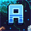

HƯỚNG DẪN TÂN THỦ
Hướng dẫn tân thủ tại máy chủ Revelation Skyblock
[CẬP NHẬT NGÀY 14/10/2024]
I. Khi vừa tham gia máy chủ lần đầu
- Khi vừa tham gia máy chủ lần đầu bạn hãy sử dụng lệnh /chonclass để chọn cho bản thân mình 1 trong 5 class
hiện có trong máy chủ. Xem chi tiết bộ kỹ năng class tại đây
- Sau khi thực hiện chọn class xong ở trên hãy tiếp tục sử dụng lệnh /kit starter và tìm NPC đổi đồ khởi đầu tại khu vực spawn và thực hiện đổi vật phẩm ĐÁ ĐỔI QUÀ - KHỞI ĐẦU để đổi lấy
TÚI KHỞI ĐẦU, khi bạn đã có túi khởi đầu chỉ cần cầm túi trên tay và ấn chuột phải là sẽ nhận được set khởi đầu.
- Tiếp tục sử dụng lệnh /is create [tên đảo của bạn] để bắt đầu hành trình mới của bạn, nếu bạn có bạn bè có đảo sẵn thì họ
có thể mời bạn vào thông việc sử dụng lệnh invite nằm trong hướng dẫn tại giao diện /help
II. Về vấn đề nhập code phần thưởng đối với newbie
- Khi bạn đã chọn class cho mình xong thì không nên nhập code thưởng (từ các sự kiện do Admin tổ chức) ngay lập tức vì máy chủ yêu
cầu bạn phải Online từ 30 phút ~ 1 giờ để xác nhận bạn là người chơi, sau thời gian
nêu trên bạn có thể nhập code và nhận được thưởng, trường hợp nhập code sớm trước thời gian nêu trên sẽ không nhận được thưởng
đồng thời STAFF KHÔNG GIẢI QUYẾT vấn đề này.
III. Về việc cày vật phẩm nâng cấp bản thân
- Hiện tại Admin đã nhận được rất nhiều phản ánh từ người chơi về vật phẩm cày từ /warp trade rất khó nâng cấp, nên kể từ Season 2 giá trao đổi các trang bị từ set Khởi Đầu đến set LV.40 đã giảm và newbie có thể đẩy nhanh quá trình đuổi kịp các người chơi đã chơi từ Season 1.
IV. Generator tại máy chủ
- Máy chủ sử dụng generator: Nước + Hàng Rào = Khoáng Sản
- Bạn có thể sử dụng lệnh /kho và bật chế độ AutoPickup để khi đào khoáng sản thì nó sẽ tự động nhặt lên và trữ vào kho của bạn.
V. Crates
- Nhìn thấy crates là thấy chán đời? Server P2W? Cũng có thể hoặc không có thể.
- Bạn có thể sử dụng lệnh /kit coban và tìm NPC đổi túi cơ bản tại khu vực Trade để đổi, khi có
túi trên tay bạn chỉ cần ấn chuột phải để nhận key thông dụng dùng để mở crate.